Sportsman on DOCK 2 – complete frame review, progress report
Status as of Nov 23, 2026, early morning. All exported days, Nov 4–20, are scanned and reviewed. The low-resolution Nov 4–9 hours were captured by playback, and the detector is running on those frames now.
Bottom line so far
Nobody was seen carrying a gaff off the Sportsman in any exported footage, Nov 4–20. Small items in someone's hand can't be ruled out at this resolution.
The dock owner (the bald man, sometimes with a dog) owns the dock, the lifts and the Grady-White; he met the boat on Nov 20.
The owners of the Sportsman (twins, usually seen together) were at the boat on Nov 4, 5, 6, 7, 10, 14, 16, 19 and 20, as confirmed by the owner. They are the two men on Nov 14 and 19, the man in the light-blue tee aboard on Nov 16, and part of the Nov 10 fishing group. Fewer screenshots of them are kept below.
People who aren't the owners: the lift crew on Nov 6 (one man stepped aboard for about a minute, hands look empty), the Nov 10 trip guests, a young man with a bucket on the dock on Nov 9, passers-by on Nov 14, a man in a black tee working on the lift from the dock on Nov 16–17. Apart from the Nov 6 crew man and the Nov 10 guests, none of them went aboard.
No night-time activity in the exported footage: every night-time detection was a false alarm (lights, rain, a heron, the motor cover, the T-top).
System logs: the recording server restarted on Nov 9 at 10:46 AM, and the dock cameras dropped out repeatedly from 11:27 AM to 12:43 PM. All three dock cameras disconnected on Nov 14, 3:54–4:08 PM, right after a group of five unloaded on DOCK 3. Who changed settings, if anyone, is only in DW's Audit Trail, which needs an admin login.
Missing hours, explained: for Nov 4–9, DW holds the night hours (and parts of each day) only as a blurry low-resolution copy, and DW's export skips that copy. The sharp recording runs around the clock only from about 2:45 PM on Nov 9. Those hours are now being checked by playing them in DW at 16x and running the detector on screen captures.
Possible settings change around Nov 9: recording behaved differently before Nov 10 (sharp copy only part of the day, video encoded differently). That fits a recording-settings change on or near Nov 9, the day of the server restart. Only DW's Audit Trail can show who changed what, and the DW login on this computer is a viewer account, not an administrator.
Most worth a follow-up: the Nov 10 trip (did the gaff come back with the guests' gear?), the Nov 9 visitor, the Nov 6 lift crew, and the Nov 16–17 lift worker. Also, when the owners last saw the gaff: that narrows the window.
1. How the review was done
Each day of DOCK 2 video was exported from DW Spectrum, without a timestamp overlay.
An AI person detector (YOLOv8n, run locally on this computer) checked every keyframe:
Nov 10 onwards: about one frame every 1.2 seconds, 64,000–80,000 frames a day.
Nov 4–9: about one frame every 4–8 seconds, because the older footage is stored at lower detail.
Every detection near the boat was checked by eye.
Known false alarms were set aside, with the strongest ones still spot-checked by eye: the grey motor cover (the detector reads it as a hooded person), a dock post, specks at the frame edge, and far-off lights.
No face identification. People are described by clothing only. Anyone who isn't clearly the owners is marked UNSURE.
2. Coverage and gaps in the footage
Day
Footage on the camera
Frames checked
Result
Oct 30 – Nov 4, 4:30 PM
Earlier DW review
–
Lift empty. The Sportsman wasn't there yet.
Nov 4
4:27 PM onwards
4,086
Owners arrival and docking
Nov 5
13.1 h of 24
11,686
Owners cleaning session aboard
Nov 6
13.2 h of 24
11,766
Owners with a lift crew; UNSURE crew man aboard ~1 min
Nov 7
12.9 h of 24
11,475
Owners two short visits, nobody boarded
Nov 8
11.9 h of 24
10,545
Nobody
Nov 9
14.9 h of 24
38,713
UNSURE visitor on the dock ~5 min, didn't board
Nov 10
23.9 h (full day)
64,684
Owners with guests, fishing trip, out 9:36 AM, back ~3:25 PM
Nov 11
23.9 h (full day)
73,248
Nobody
Nov 12
23.9 h (full day)
79,986
Nobody
Nov 13
23.9 h (full day)
73,612
Nobody
Nov 14
23.5 h (to 11:30 PM; next export starts 11:55 PM)
58,223
Owners on the dock by the stern; passers-by; nobody boarded
Nov 15
23.9 h (full day)
62,473
Nobody
Nov 16
23.9 h (full day)
67,945
Owners one owner aboard 1:22–1:30 PM; UNSURE lift worker on the dock
Nov 17
23.6 h (full day)
79,045
UNSURE lift worker on the dock, nobody boarded
Nov 18
23.8 h (full day)
80,134
Nobody
Nov 19
23.7 h (full day)
85,688
Owners lowered the lift, aboard 1:49–2:07 PM
Nov 20
23.9 h (full day)
86,154
Owners trip, out 12:11 PM, back ~4:48 PM
Nov 4–9, low-res hours
Played in DW at 16x and captured (33,213 frames). The detector is running on them now.
IN PROGRESS
CHECK Missing hours on Nov 4–9
From Nov 10 on, the camera holds a full 24 hours a day. On Nov 5–9 it holds only 12–15 hours.
Daylight shows up about an hour into each export, so most of the missing time is overnight.
The likeliest cause is the camera recording on motion only at night, so a still night leaves nothing to keep. A camera outage or a recording that was cut off would look the same in the export, though.
Why it matters: the exported video skips the unrecorded stretches, so for Nov 5–9 times below are "export labels", not clock times. Where an earlier DW check gave the real time, it's shown next to the label.
Next step: open Nov 5–9 in DW and note exactly where the timeline is blank. If a blank sits in the middle of a night when the camera usually records, treat it as suspicious.
Update, Nov 22 (resolved):
Test: exporting Nov 6, 12:02–7:01 AM gave only 1 h 58 min of video.
Why: DW keeps two copies, a sharp one and a blurry low-resolution one. At 4 AM on Nov 6, DW still plays video, but only the blurry copy. Export takes only the sharp copy, so those hours never reached the exports.
Since when: the sharp copy runs around the clock only from about 2:45 PM on Nov 9. The exports also changed then, from a key frame every ~8 s to every ~1.2 s. Both point to a recording-settings change around Nov 9. The Audit Trail would show who made it.
Motion search note: DW's motion search had an area filter on a small patch of water under the stern, so its motion marks said nothing about the boat. The filter was cleared. It is a search filter, not a camera setting. Across the whole picture, water and light trigger motion at night too, so motion marks alone can't clear the nights.
Now running: DW plays Nov 4, 4:30 PM to Nov 9, 3 PM at 16x. A script reads the video area of the screen twice a second (it sends no input), and the same person detector checks every saved frame. Each frame carries DW's own date and time.
System logs: camera dropouts and server restart
DW's Event Log was checked read-only for Oct 26 – Nov 22, covering camera issues on every camera and all server events. Only the three dock cameras (DOCK 1, 2 and 3) had problems; no house camera did. That points to the dock's network or power link rather than the recording server.
When
What the log says
Why it may matter
Nov 9, 10:46:32 AM
Recording server started, meaning it had been off or restarting before this.
CHECK It came on the same morning as the unknown visitor (~10:10 AM on DOCK 3). The log doesn't say why it restarted or how long it was down.
Nov 9, 11:27 AM – 12:43 PM
Repeated drops on all three dock cameras:
DOCK 2: connection "unexpectedly closed" at 11:27, 11:39 and 12:35.
DOCK 1: disconnected at 11:41 and 11:59.
DOCK 3: disconnected at 11:41, 12:18, 12:24 and 12:30.
CHECK About 75 minutes of unstable recording on the dock cameras, starting soon after the restart.
Nov 14, 3:53–4:08 PM
DOCK 1 and DOCK 3 disconnected at 3:54 PM; DOCK 2 disconnected at 4:08 PM. The Nov 14 export holds about 30 minutes less than a full day.
CHECK This started about 2 minutes after the earlier pass saw a group of five unloading on DOCK 3 at 3:52 PM. Nov 14 is still being scanned.
Nov 10, 9:29–9:30 AM and 4:39 PM; Nov 11, 11:59 AM
Server "Storage Issue": not enough disk or network speed for recording to drive E:.
Possible dropped frames. These match the Nov 10 departure (9:36 AM) and return (~3:25–4:13 PM) windows.
Nov 1, 4, 6, 11, 14 (other)
Short "RTP errors" (brief stream hiccups) on the dock cameras.
Common and usually harmless.
Settings changes and who made them: DW keeps an Audit Trail of every login (user name and computer address) and every change to camera, recording, motion or detection settings. This login doesn't have access to it: the System Administration and Audit Trail menu items aren't there, so it isn't an administrator account. Ask the system owner or installer to open Main Menu → Audit Trail for Oct 26 – Nov 22 and look for:
logins around Nov 9, 10:00 AM – 1:00 PM and Nov 14, 3:30–4:30 PM;
changes to DOCK 1, 2 or 3 recording or motion settings;
anyone who deleted footage or turned recording off.
The cameras' own web pages also keep reboot and settings logs, but they need the camera admin password.
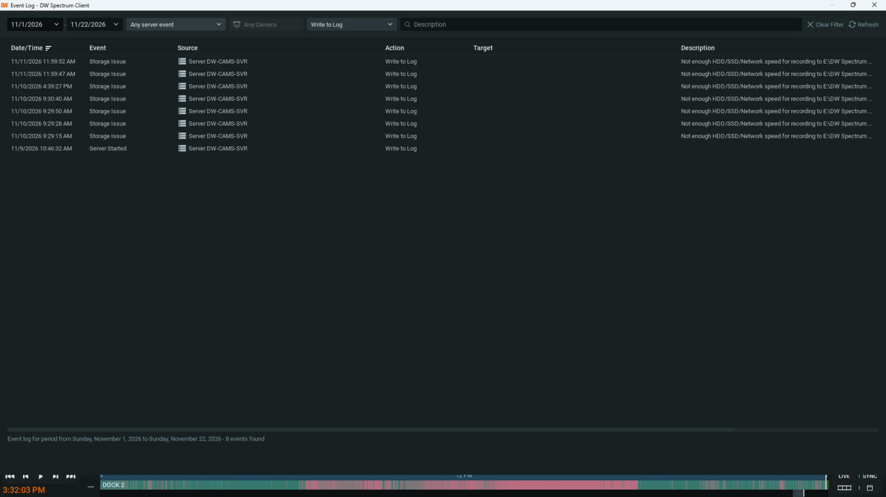
DW Event Log, server events Oct 26 – Nov 22: server started Nov 9, 10:46 AM, and storage warnings on Nov 10–11.
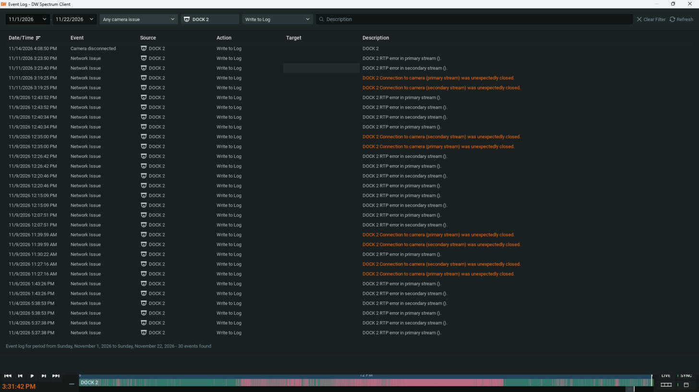
DW Event Log, DOCK 2 camera issues Nov 1–22: disconnected Nov 14, 4:08 PM; repeated drops Nov 9 and Nov 11.
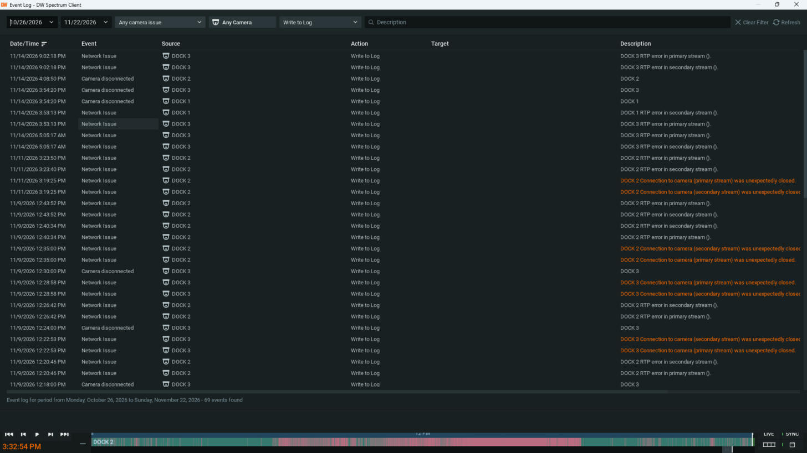
All cameras, page 1: Nov 14 dock-camera disconnections (3:54–4:08 PM) and the Nov 9 DOCK 3 drops.
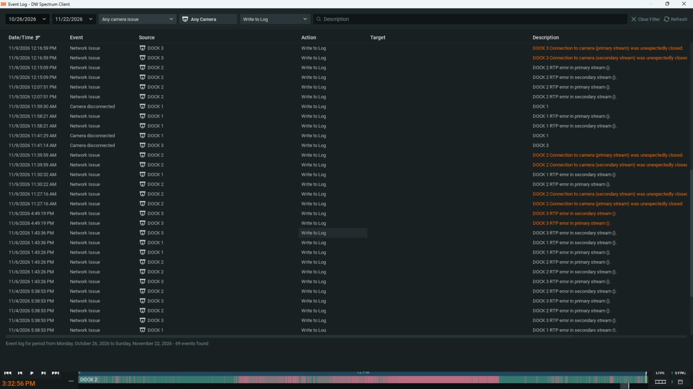
All cameras, page 2: Nov 9 DOCK 1, 2 and 3 drops, 11:27 AM – 12:16 PM.
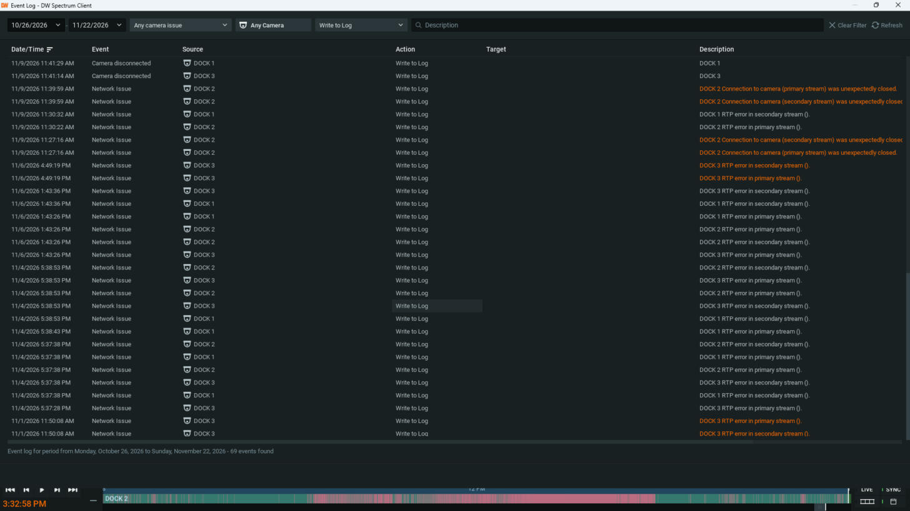
All cameras, page 3: earlier short stream errors (Nov 1, 4, 6). Nothing logged Oct 26–31.
Short gaps between exports
Nov 4 ~11:53 PM – Nov 5 12:05 AM
Nov 5 ~11:55 PM – Nov 6 12:04 AM
Nov 13 11:50 PM – Nov 14 12:00 AM
These are 10–15 minutes each. They are most likely just where one day's export ends and the next begins, but they haven't been checked yet.
3. People detected, with timestamps
Nov 4 – boat arrives Owners
About 4:38 PM: the owners dock the Sportsman and rinse it.
Long pole in the owner's hands (4:58–5:11 PM): a scrub brush on a telescoping pole, not the gaff. We watched the full-resolution export (4:34–5:12 PM). The pole has a red grip and a round blue brush head on the end, clearly visible at 5:00 PM and 5:10:52 PM. He scrubs the bow deck (4:58–5:03), then the console and windshield frame (5:06 and 5:09–5:10). At 5:10:59 he bends down on the port side by the console and puts it down inside the boat. He walks off to the right at 5:11:04 without it. The export ends at 5:12 PM, so what happened to it after that isn't covered. It isn't confirmed that this is the same brush seen on the dock on Nov 5. The gaff doesn't appear in any of these frames.
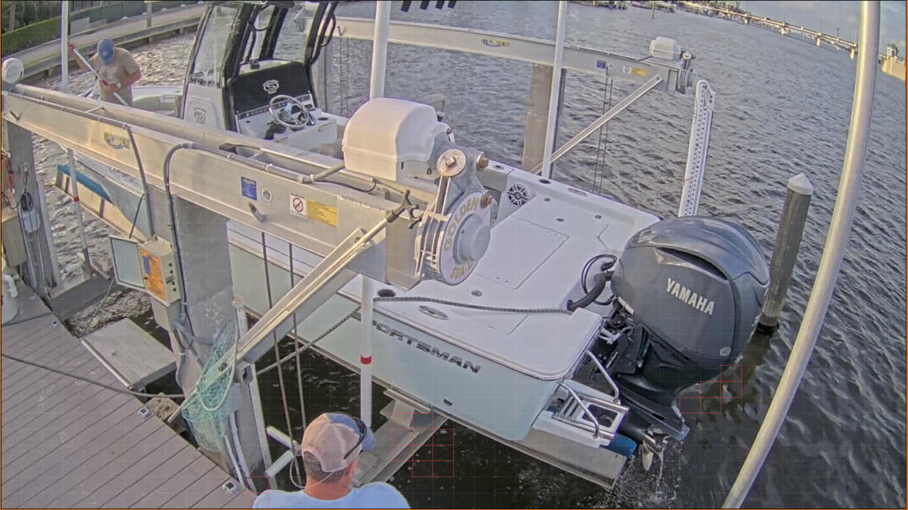
Nov 4, ~5:00 PM – one of the owners with the long pole at the bow. The footage shows it is a scrub brush on a telescoping pole (see below).
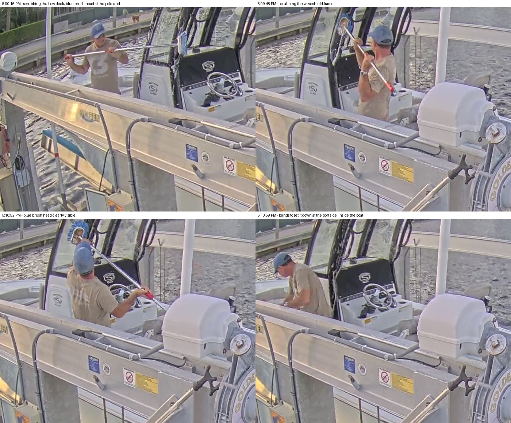
Nov 4, 5:00–5:11 PM (full-resolution export) – blue brush head on the pole; he scrubs the deck and windshield, then puts it down inside the boat on the port side.
Nov 5 – cleaning session Owners
The owners were detected this day (confirmed by the owner). The earlier descriptions are kept below; one screenshot is kept.
When: export labels 04:47–07:18, roughly 12:00–3:00 PM real time according to the earlier DW check. About 2.5 hours.
The lift was lowered to deck level.
A man in a white tee and white cap and a man in a light shirt boarded and knelt on the aft deck, scrubbing.
A man in a navy tee and white cap worked the lift control from the dock. A man in a light-blue long-sleeve and jeans stood by the console.
Brought aboard: a light-blue cooler, a white bucket and a small yellow box. The deck was clear again by label 06:59, and the boat was raised again afterwards.
Open: watch labels 06:40–06:59 in DW to see what was carried off.
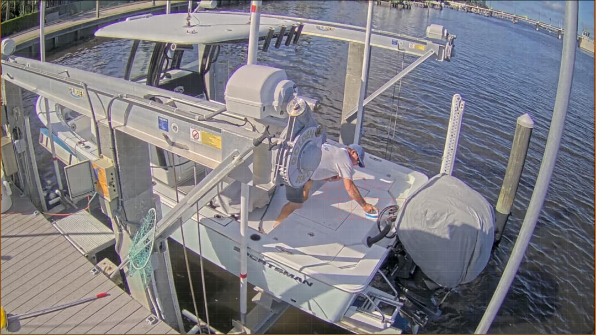
Nov 5, 2:25 PM (DW clock) – scrubbing at the stern. The red-tipped item lying on the dock is confirmed to be the brush.
Nov 6 – owners with a lift crew; one crew man briefly aboard OwnersUNSURE crew
The owners were detected this day (confirmed by the owner). The lift-crew men who aren't the owners stay UNSURE.
Morning (labels 04:00–05:36): one man in a navy tee and white cap knelt on the dock by the lift base for about 1.5 hours, working with a hose or cable. He never went on the boat.
Afternoon (labels 07:45–09:41, about 2:20–3:30 PM on the DW clock): 3–4 men worked on the lift arms, cables and control.
They wore an orange tee with a large white back print, a grey tee with an orange round logo, and a light-grey tee.
The lift was lowered at label 08:53.
At labels 09:07–09:09 the grey-tee man stepped onto the aft deck and reached up to the T-top for about a minute. His hands look empty when he steps off.
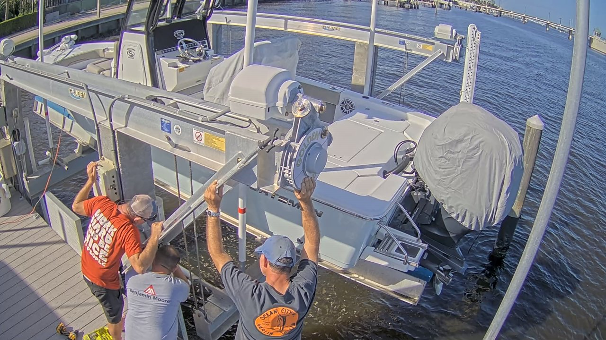
Nov 6, label 08:12:05 – lift crew at work.
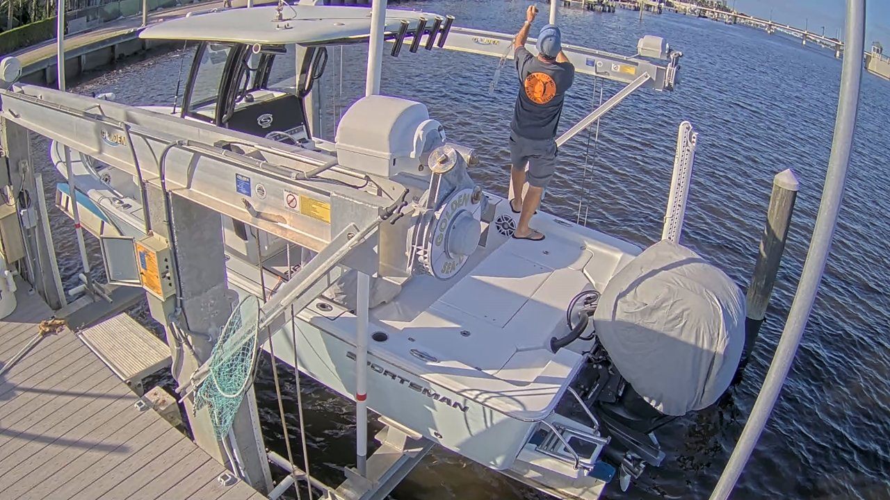
Nov 6, label 09:08:14 – crew man on the aft deck, reaching to the T-top.
Nov 7 – two short visits by the owners, nobody boarded Owners
Labels 00:39–00:53, morning light: two men and a dog. One squats at the stern from the lower dock for about 2 minutes, then all three leave.
Labels 05:24–05:47, late afternoon: the same two outfits. The light-blue-shirt man works the yellow lift control. The navy-shirt man handles the stern from the dock for about a minute.
The cover stays on and nothing is carried. These are the owners (confirmed by the owner).
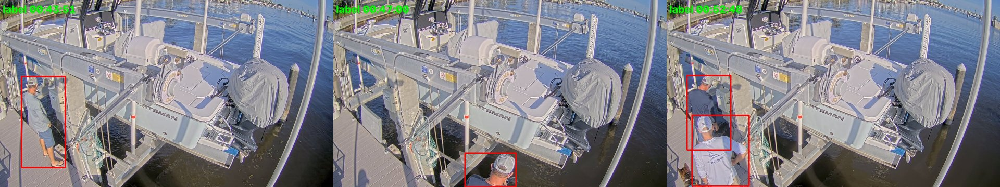
Nov 7, labels 00:43–00:52 – two men and a dog on the dock.
Nov 9 – unknown visitor on the dock UNSUREFOLLOW UP
When: labels 02:33:52–02:38:35, about 5 minutes. The DOCK 3 frame of the same young man is at about 10:10 AM on the DW clock.
Description: young man in a grey camo-pattern long-sleeve fishing shirt, grey shorts and sandals, with a black backpack and earbuds. He carried an orange bucket and set a small dark device on the dock.
At about label 02:34:15 he reached up to the lift frame by the bow-side post, with his back to the camera.
He never boarded, and the landing net is still on the lift afterwards.
Open: watch in DW what his hands did at the post. Ask the owner whether they know him; he may be a neighbour's guest fishing from the dock.
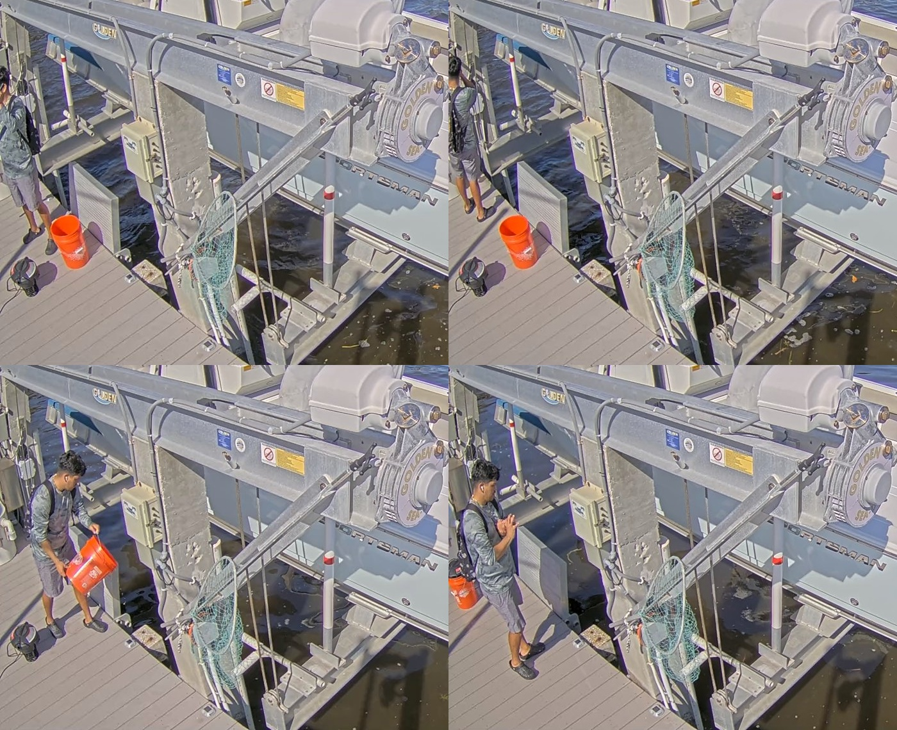
Nov 9, labels 02:33–02:38 – visitor with an orange bucket at the lift post.
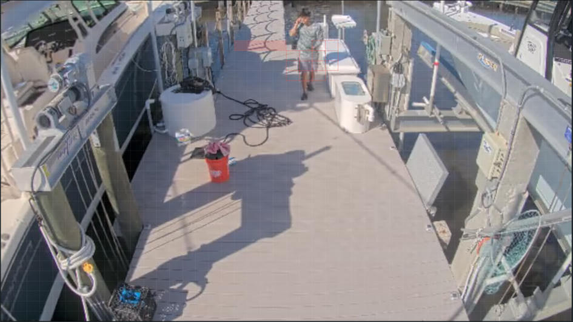
Nov 9, ~10:10 AM (DW clock), DOCK 3 – the same young man.
Nov 10 – group fishing trip OwnersUNSURE guestsFOLLOW UP
The owners were part of this group (confirmed by the owner). The other people aboard (including the woman in a navy top) are guests.
The times below are clock times: this day was recorded in full.
Out, 9:20–9:36 AM:
A man in a sage-green tee with a round white back logo lowered the lift and took the motor cover off.
A man in a light-blue long-sleeve fishing shirt and a man with a backpack loaded coolers, bags and a blue tote.
They left at 9:36 AM.
Back, about 3:23–4:13 PM:
Four aboard, including a woman in a navy top.
They unloaded coolers, bags and the blue tote, hosed the deck, put the cover on and raised the boat by about 4:12 PM.
Open: a gaff can't be picked out at this resolution. Ask the owners whether the gaff came back from this trip, and watch the unload (3:28–4:12 PM) in DW.
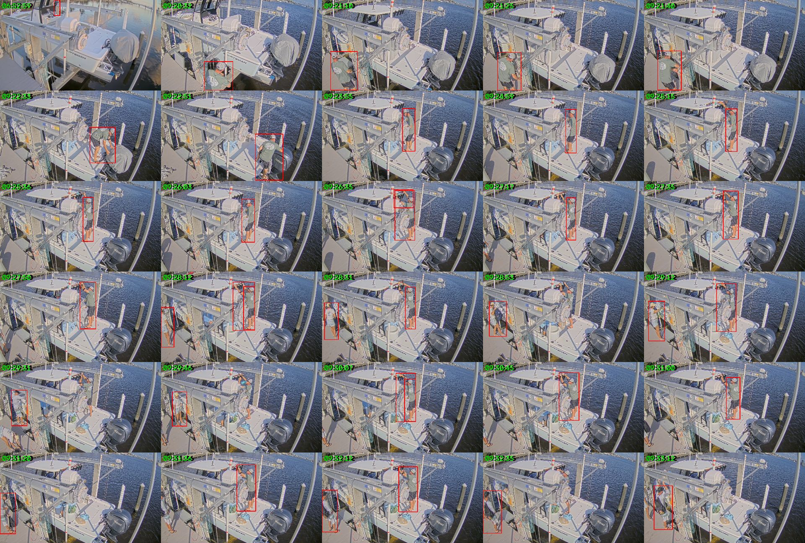
Nov 10, 9:20–9:36 AM – loading and departure.
Nov 14 – the owners on the dock by the stern, nobody boarded Owners
The owners were detected this day (confirmed by the owner): they are the red-jacket and navy-jacket men below. The other passers-by are unknown.
6:42–6:55 AM: one person stood at the far left edge of the dock. Never came to the boat.
3:19 PM: one of the owners (red jacket, grey cap) leaned in at the stern, by the landing net, at dock level.
3:23–3:33 PM: a woman with long fair hair and a person in dark clothes walked past the stern.
3:46–3:55 PM: the owners stood on the dock under the raised boat:
One wore a red Helly Hansen-style jacket, grey cap and sunglasses. He talked on the phone and drank from a can.
One wore a navy jacket and white cap. He stood at the lift's stern ladder, reaching up toward the lift.
Neither climbed onto the boat. The boat stayed raised with the motor cover on. Nothing visible was carried away, but small items in hand can't be ruled out.
Timing: this is right before the 3:54–4:08 PM camera disconnects in the system log. On DOCK 2, though, the video has no gap over 60 seconds that afternoon. The recording continued.
Night: 12:53 AM and 11:19–11:23 PM detections were a heron on the motor cover.
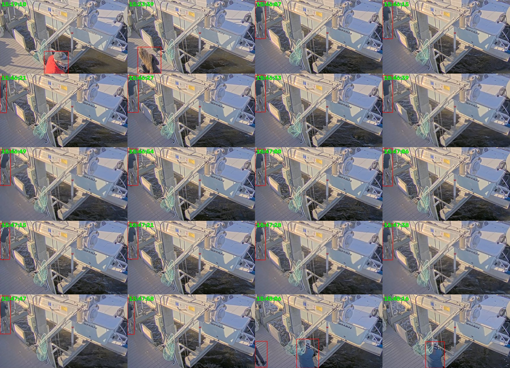
Nov 14, 3:19–3:48 PM – red-jacket man at the stern (3:19), the woman passing (3:23), and a man standing at the left edge (3:46–3:47).
Nov 16 – lift worker in the morning; one of the owners aboard 1:22–1:30 PM OwnersUNSURE worker
10:53–11:33 AM (not an owner): a man in a black tee and shorts knelt on the dock at the lift's left post for about 40 minutes, with tools and a red toolbox. This looks like work on the lift. He didn't board.
1:16–1:22 PM: one of the owners, in a light-blue tee with a round logo on the back, grey cap, sunglasses, dark shorts and flip-flops looked at the lift from the dock.
1:22–1:30 PM, aboard: he climbed up the lift arm onto the raised boat.
He knelt on the aft deck by the leaning post for about 3 minutes (1:24–1:27).
He went forward to the console and leaned into it (1:26–1:30).
He climbed back down the lift arm at 1:30:33 and walked off along the dock at 1:30:41.
The owner confirmed the light-blue-tee man is one of the owners. The man in the black tee working on the lift that morning is not an owner (UNSURE, likely a lift worker).
Later detections that day were the lift ladder and the motor cover.
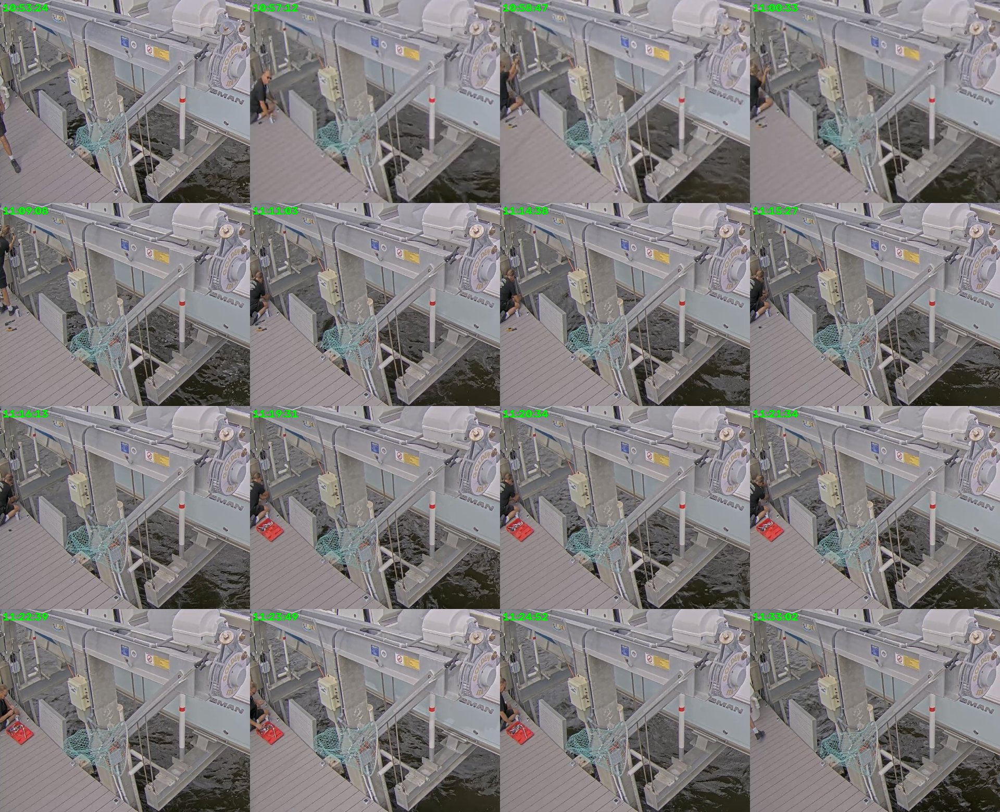
Nov 16, 10:53–11:33 AM – a man working at the lift post with a red toolbox. He didn't board.
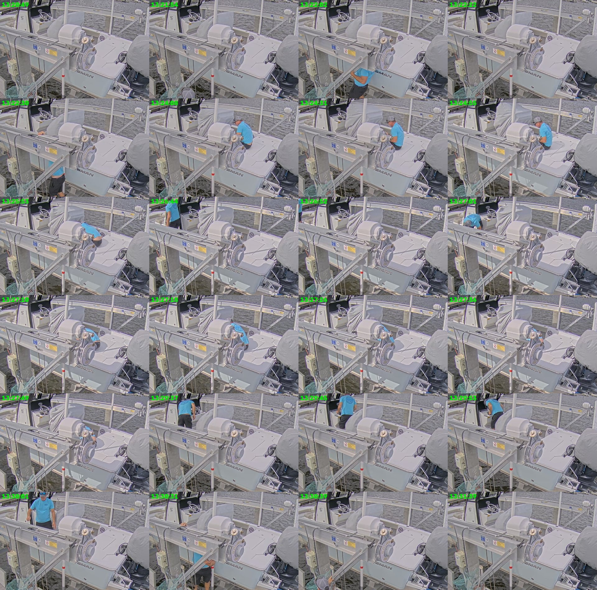
Nov 16, 1:21–1:31 PM – aboard: kneeling by the leaning post (1:24–1:27), then at the console (1:26–1:30).
Nov 17 – lift worker on the dock, nobody boarded UNSURE
1:09–2:00 PM: a man in a black tee and shorts worked at the lift post and control box, sometimes kneeling. He looks like the Nov 16 morning worker. He didn't board.
All other detections were the lift ladder, the T-top and the motor cover.
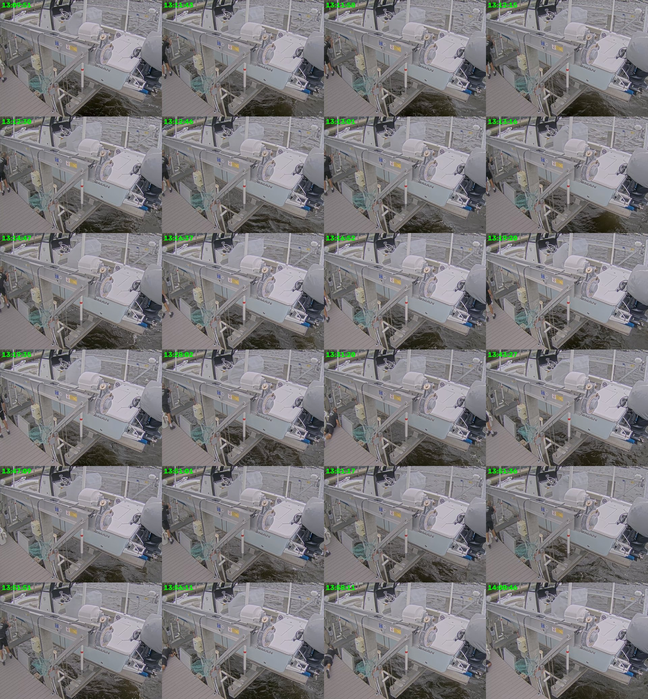
Nov 17, 1:09–2:00 PM – a man at the lift post.
Nov 18 – nobody near the boat
Evening detections (7:42–9:16 PM) were rain streaks over the lift's control box, and the motor cover. All the others were the lift ladder or the T-top.
No people in these detections (screenshots left out): Nov 18, 7:42–9:16 PM: rain streaks over the lift's control box, and the motor cover.
Nov 19 – the owners lowered the boat, went aboard and raised it again, 1:49–2:07 PM Owners
These are the owners (confirmed by the owner).
Who:
A man in a red long-sleeve fishing shirt, blue cap, grey shorts and flip-flops, carrying a black bag when he arrived.
A man in a navy tee with a white boat logo on the back, grey cap and jeans.
What they did:
1:49 PM: the red-shirt man used the lift's control box and lowered the boat.
1:57–1:59 PM: the navy-tee man was aboard at the console.
About 2:05 PM: the red-shirt man was aboard at the console.
2:00–2:01 PM: the navy-tee man hung the landing net back on the lift arm. The long pole in his hands is the net's handle, not a gaff.
About 2:06 PM: the boat was raised again with the motor cover still on.
2:07 PM: the navy-tee man walked away.
The boat never left the lift. The visit lasted about 17 minutes.
Night: 4:14–5:11 AM and 10:05–10:28 PM detections were the control box and the motor cover.
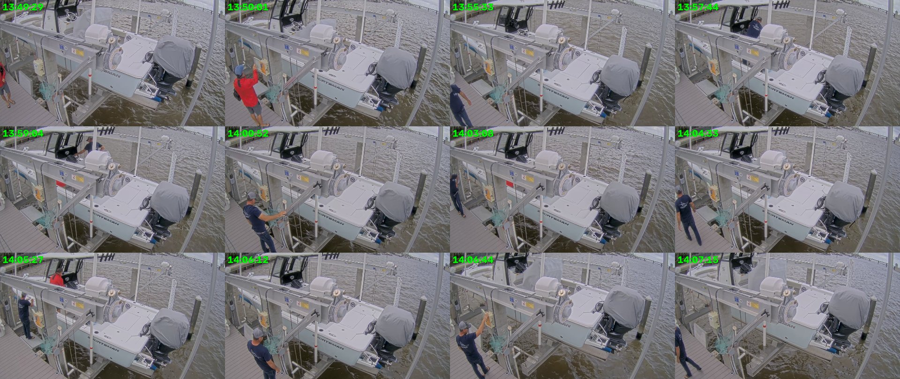
Nov 19, 1:49–2:07 PM – the lift lowered, both men aboard in turn, then raised again.
Nov 20 – the owners' trip Owners
Out, 11:46 AM – 12:12 PM: two men loaded coolers, bags and rods, took the motor cover off, lowered the lift and left at about 12:11 PM. One wore a blue long-sleeve fishing shirt, the other a light-grey long-sleeve shirt.
Back, about 4:48 PM: the dock owner (the bald man, here with his dog; he owns the dock, the lifts and the Grady-White) met the boat on the dock, 4:48–4:50 PM. He didn't board.
Cleanup, 5:00–5:50 PM: the two men hosed the boat, unloaded, put the motor cover back on and raised the boat by 5:43 PM.
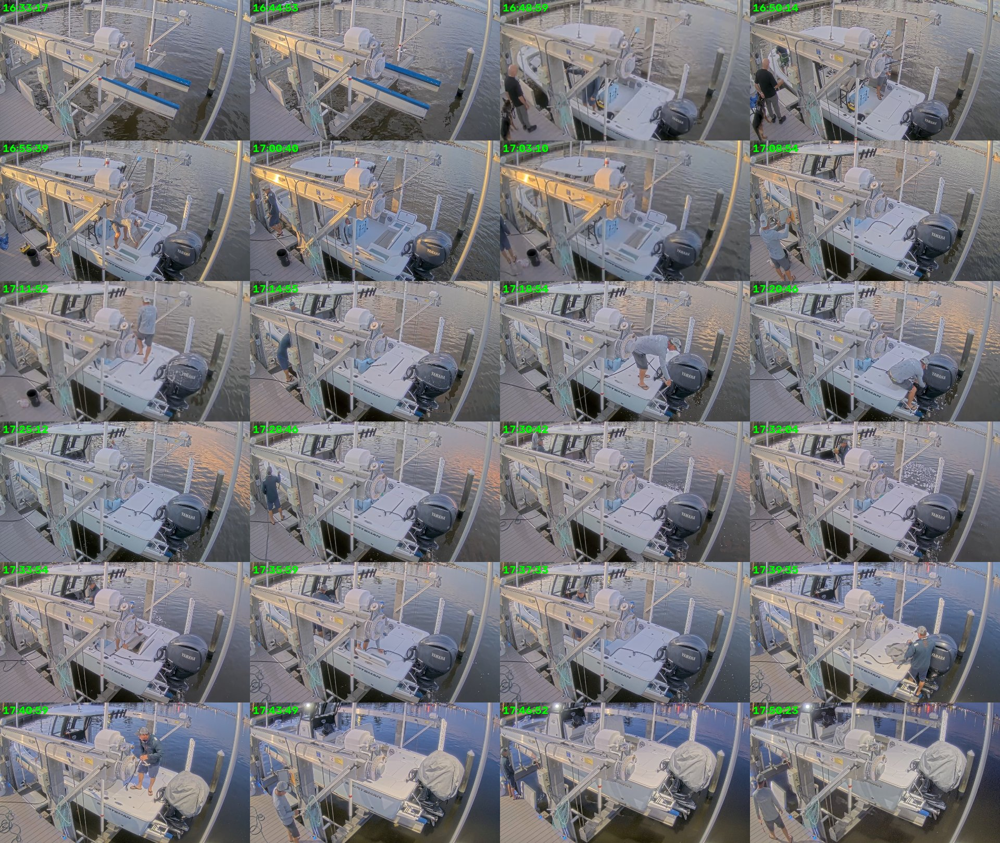
Nov 20, 4:33–5:50 PM – lift empty, return, the dock owner with his dog, cleanup, cover back on.
Nov 8, 11, 12, 13, 15 and 18 – nobody near the boat
The boat stayed raised with the motor cover on.
All detections were false alarms: Nov 11 had 917, Nov 12 had 9,999, Nov 13 had 7,704, Nov 15 had 3,780 and Nov 18 had 3,683. Almost all were the motor cover, the lift ladder or the T-top, and they were checked by eye.
No people in these detections (screenshots left out): Nov 12: the strongest detections were a speck at the edge of the frame and the grey motor cover, which the detector reads as a hooded person.
No people in these detections (screenshots left out): Nov 15: about 1,400 daytime detections, all the grey motor cover. The full day was recorded, with no gap over 5 seconds.
4. Anything suspicious
Item
What was found
Status
Late-night activity
None in the exported footage. Every night-time detection on Nov 10–20 was checked: far-shore lights, rain over the control box (Nov 18), a heron on the motor cover (Nov 14, 16), the T-top at dawn, or the motor cover. The Nov 4–9 nights are being checked from the playback capture.
CLEAR
Interruptions in the footage
Recording server restarted Nov 9 at 10:46 AM.
Dock cameras dropped repeatedly Nov 9, 11:27 AM – 12:43 PM.
All three dock cameras disconnected Nov 14, 3:54–4:08 PM, right after a group of five unloaded on DOCK 3 and the owners stood under the Sportsman (3:46–3:55 PM). The DOCK 2 video itself shows no gap over 60 seconds then.
The Nov 4–9 night hours are in DW only as the low-resolution copy, which export skips (now being checked by playback).
Recording changed around Nov 9 (sharp copy around the clock from ~2:45 PM, different key-frame spacing): a possible settings change.
Who changed settings, if anyone, is only in the Audit Trail. The DW login on this computer is in the Advanced Viewers group, so the Audit Trail is hidden; a DW administrator has to open it.
CHECK
Strangers at the boat
Nov 9 young man with a bucket at the lift post, about 10:10 AM. Nov 14 passers-by (a woman with long fair hair, a person in dark clothes). Nov 16–17 lift worker in a black tee on the dock. None boarded. (The bald man with the dog on Nov 20 is the dock owner.)
ASK OWNER
Non-owners aboard
Nov 6 lift-crew man aboard about 1 min, hands look empty. Nov 10 guests on the fishing trip. (Nov 5, 16 and 19 were the owners.)
ASK OWNER
Gaff leaving the boat
Not seen. Small items can't be told apart in the Nov 5, 10 and 20 unloads. The long pole on Nov 19 is the landing net.
WATCH IN DW
No people in these detections (screenshots left out): Night-time detections: the T-top at dawn (Nov 10), far-shore lights (Nov 12–13), a heron on the motor cover (Nov 14, 16), rain over the control box (Nov 18) and the motor cover itself.
5. Still to do
Nov 4–9 low-resolution hours: captured; the detector is running on the frames, then an eye check.
Audit Trail: a DW administrator opens Main Menu → Audit Trail and checks Nov 9 (about 9 AM – 4 PM), Nov 14 (3:30–4:30 PM), and any DOCK 1/2/3 recording or motion-setting changes.
In DW:
Check the three midnight gaps (Nov 4/5, 5/6, 13/14).
Watch the Nov 9 post moment and the Nov 10 unload (3:28–4:12 PM).
Questions for the owners: when they last saw the gaff; whether the brush on the dock on Nov 5 is the same blue-head telescoping brush used on Nov 4; whether it came back from the Nov 10 trip and who the guests were; who the Nov 6 lift crew and the Nov 16–17 lift worker are; whether they know the Nov 9 visitor.
Screenshots that showed no people (the motor cover, lift ladder, lights, rain, birds) are left out; each is described in the text instead. People are described, not identified; anyone not confirmed as an owner is marked UNSURE.